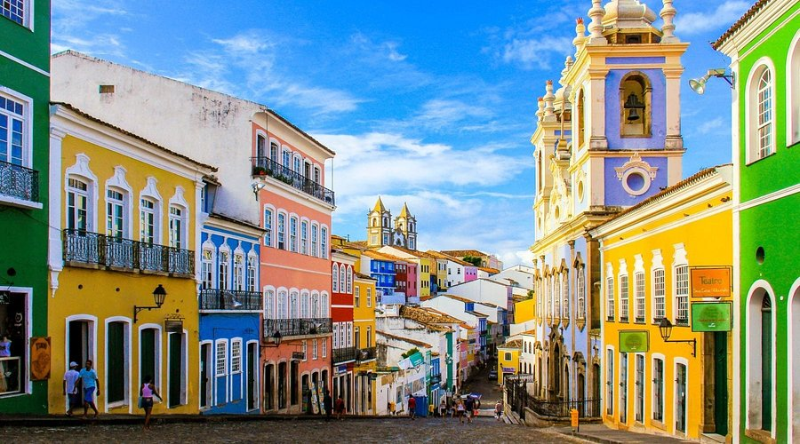
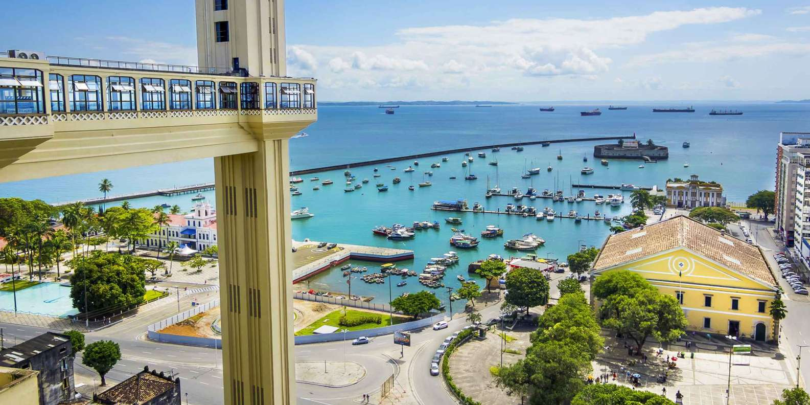
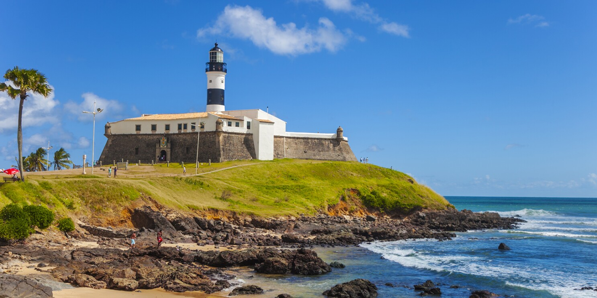
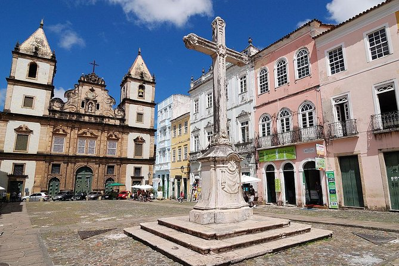

Colorful, Cultural, and Full of Life
Located in northeastern Brazil, Salvador is the capital of Bahia and one of the oldest colonial cities in the Americas. Known for its vibrant Afro-Brazilian culture, historic architecture, street festivals, and beautiful coastline, Salvador is a true celebration of life and heritage.
With cobblestone streets, colorful houses, and rhythms of samba and axé music in the air, the city offers a one-of-a-kind Brazilian experience. Don’t miss the local cuisine, capoeira dance, and sunsets over the Atlantic Ocean.
Top Places to Visit in Salvador
- Pelourinho: A UNESCO World Heritage Site filled with colonial buildings, music, and art. Learn more
- Elevador Lacerda: A historic elevator connecting the upper and lower city with amazing views.
- Farol da Barra: A famous lighthouse and great spot to watch the sunset over the beach.
- São Francisco Church: Known for its stunning gold-covered interior.




Photos from tripadvisor,get yourguided, afar and viator.
Pelourinho |
Barra Lighthouse |
Culture photo